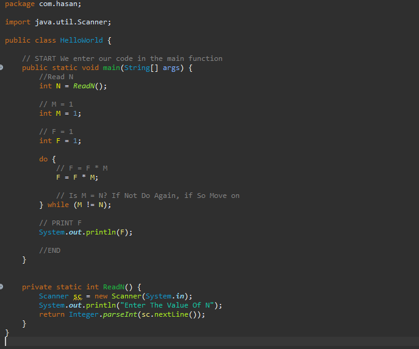

Logical Operations
In programming, it is important to understand control flow. This is the flow in which our program will execute lines of code. Logical operations play a major part in dictating that flow. Take a look at the image below.

The above depicts the start of a program, that will proceed to execute lines of code and then make decisions on how to proceed. We can envision this control flow diagram in code as such:

Examples
If Statements
/**
* In the below example our flow of execution will enter through the main()
* function and traverse our code from "top to bottom". We use the IF
* operator to manipulate the flow of execution, if the expression that
* follows an if statement resolves to "true" the nested code will be
* executed. If the expression is false, the nested code is NOT
* executed and instead is skipped over.
*
* EXPECTED OUTPUT:
* ================
* Program Start
* This line was executed
* Program End
*/
public static void main(String[] args) {
System.out.println("Program Start");
// The below expression will resolve to true,
// therfore its nested code will be executed
if (1 == 1) {
System.out.println("This line was executed");
}
// The below expression will resolve to false,
// therefore its nested code will NOT be executed
if (1 == 2) {
System.out.println("This line was NOT executed");
}
System.out.println("Program End");
}
/**
* In the below example our flow of execution will enter through the main()
* function and traverse our code from "top to bottom". We use the IF and
* ELSE operators to manipulate the flow of execution, if the expression
* that follows an if statement resolves to "true" the nested code will be
* executed. Else another nested block of code will be executed.
*
* EXPECTED OUTPUT:
* ================
* Program Start
* x was NOT equal to y
* Program End
*/
public static void main(String[] args) {
System.out.println("Program Start");
int x = 1;
int y = 2;
if (x == y) {
System.out.println("x was equal to y");
} else {
System.out.println("x was NOT equal to y");
}
System.out.println("Program End");
}
/**
* In the below example our flow of execution will enter through the main()
* function and traverse our code from "top to bottom". We use the IF and
* ELSE-IF and ELSE operators to manipulate the flow of execution, if the
* expression that follows an if statement resolves to "true" the nested
* code will be executed. Else IF the seconde IF condition resolves to true
* it's nested code will be executed, ELSE another nested block of code
* will be executed.
*
* EXPECTED OUTPUT:
* ================
* Program Start
* x was equal to z
* Program End
*/
public static void main(String[] args) {
System.out.println("Program Start");
int x = 1;
int y = 2;
int z = 1;
if (x == y) {
System.out.println("x was equal to y");
} else if (x == z) {
System.out.println("x was equal to z");
} else {
System.out.println("x was NOT equal to y OR z");
}
System.out.println("Program End");
}